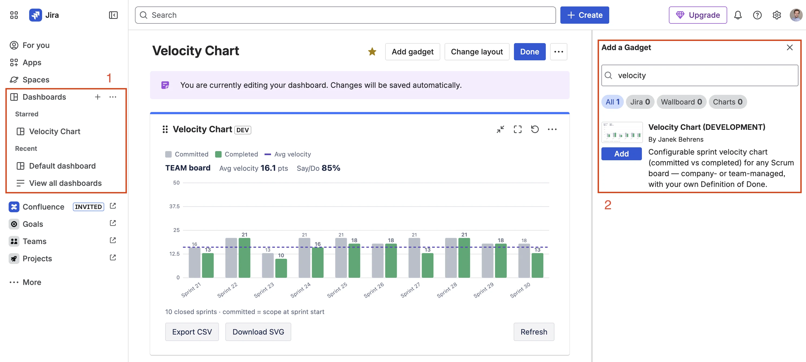

Velocity Chart for Jira — Documentation
The sprint velocity chart the native report doesn't give you — on any dashboard, any board type, with your own Definition of Done.
Contents
1. Overview
Velocity Chart adds a clean sprint velocity chart to any Jira dashboard. For each closed sprint it shows committed (grey) versus completed (green) work, a dashed average-velocity line, and your say/do ratio.
- Works on company-managed and team-managed Scrum boards.
- Define “Done” yourself — count exactly the statuses you consider complete.
- Estimate by Story Points, issue count, or any numeric custom field.
- Compare multiple boards in one gadget and export to CSV/SVG.

2. Quick start
Step 1 — Install from the Marketplace
- Go to Velocity Chart for Jira on the Atlassian Marketplace and click Get it now.
- Choose your Jira site and confirm. Free for up to 10 users.
Step 2 — Add the gadget & pick a board
- Open a Jira Dashboard → Add gadget → search for Velocity Chart → Add.
- Click the gadget's pencil / Edit icon.
- Pick a Scrum board (company-managed or team-managed) → Save.

3. Configuration
Everything is configured from the gadget's Edit mode:

| Setting | What it does |
|---|---|
| Board(s) | The Scrum board to chart. Team-managed boards are tagged “team-managed”. PRO Select up to 4 boards to compare. |
| Sprints to show | How many recent closed sprints to display. Free: up to 7, Pro: up to 20. |
| Sprint labels | Full name or Numbers only. Long names are shortened on the axis; hover a label for the full name. |
| Estimation PRO | Story Points (the board's estimation field, with a fallback to the standard Story Points field), Issue count, or any numeric custom field. |
| Count as “Done” PRO | Choose exactly which statuses count as completed. Defaults to your board's Done column. This is the key difference from Jira's built-in report. |
| Include sub-tasks PRO | Off by default (matches Jira's native behaviour). Turn on to include sub-task estimates. |
Story point estimate).
4. How velocity is calculated
For each closed sprint the gadget shows two bars:
- Committed (grey) — the sum of estimates of the issues that were in the sprint at its start, reconstructed from the Sprint-field change history.
- Completed (green) — the sum of estimates of the issues that are Done at the end of the sprint, where “Done” is your configured status set (or the board's Done column by default).
Average velocity is the mean completed work across the displayed sprints (the dashed line). Say/Do ratio (predictability) is completed ÷ committed — how reliably the team delivers what it commits to.
5. Multiple boards PRO
Select several Scrum boards in one gadget to compare them side by side. Each board gets its own compact chart with its own average and say/do, all using the same estimation and Definition of Done — so you compare like for like in a single dashboard slot.

6. Export PRO
- Export CSV — board, sprint, committed, completed and say/do for every displayed sprint (across all selected boards).
- Download SVG — the chart as a crisp, scalable image for slides and reports.
7. Free vs Pro
Velocity Chart has one simple plan — there is no separate “Free” edition to buy up front. The app is free for teams of up to 10 users, and larger teams get a free trial. Pro features unlock automatically while your site has an active subscription (the free trial counts too).
You land on the reduced Free experience when a site has no active subscription — typically a larger team after its trial ends, or after a paid subscription is cancelled. The gadget never switches off: it keeps drawing a single-board velocity chart (the board's default Done and estimation, up to 7 closed sprints) so you don't lose access to your data. Re-subscribe at any time and the Pro features come back instantly.
Feature comparison
| Capability | Free | Pro |
|---|---|---|
| Single-board velocity chart + average line | ✓ | ✓ |
| Company- & team-managed Scrum boards | ✓ | ✓ |
| Sprints shown | up to 7 | up to 20 |
| Configurable Definition of Done | — | ✓ |
| Estimation mode (issue count / custom field) | board default | ✓ |
| Include sub-tasks | — | ✓ |
| Predictability / say-do | — | ✓ |
| Multiple boards in one gadget | — | ✓ |
| CSV & SVG export | — | ✓ |
Which plan is right for you?
| Free | Pro | |
|---|---|---|
| Best for | Small teams and a quick single-board velocity check. | Several teams, custom workflows, and reporting or forecasting. |
| Advantages | No setup and no cost — a real committed-vs-completed chart with the average-velocity line, on any dashboard and any board type (including team-managed). | Velocity measured your way: configurable Definition of Done, estimation modes, sub-task control, predictability (say/do), multi-board compare, more sprints, and CSV/SVG export. |
| Limitations | One board · the board's default Done & estimation · up to 7 sprints · no predictability or export. | Per-user subscription once a site has more than 10 users. |
Free for teams of up to 10 users. See the Marketplace listing for current per-user pricing.
8. FAQ & Troubleshooting
It says “No closed sprints found”.
The board has no completed sprint yet. Start and complete a sprint, or pick a board that already has closed sprints. Kanban boards have no sprints.
The bars are empty / zero.
Your issues are estimated in a different field than the board's default. Open Edit → Estimation and choose the field your team actually uses (e.g. Story point estimate), or switch to Issue count.
A board is missing from the picker.
Only Scrum boards (company- and team-managed) appear; classic Kanban boards are excluded because they have no sprints. Newly created boards appear immediately — the picker is not cached.
How is this different from Jira's built-in velocity report?
The native report is hidden on the board, locked to one board, tied to a fixed Done column and estimation field, and weak on team-managed projects. This gadget lives on any dashboard, works on every board type, lets you define “Done” and the estimation field yourself, compares multiple boards, and adds predictability and export.
Do you support team-managed projects?
Yes — fully. Team-managed Scrum boards appear in the picker tagged “team-managed” and use the same calculation.
Does the app change my issues?
No. Velocity Chart is strictly read-only and requests no write permissions. See the Security Policy.
9. Support
Questions, bugs, or feature requests? We typically respond within 1–2 business days.
Email: support@janekbehrens.de
More: Support ·
Privacy ·
Security ·
Terms